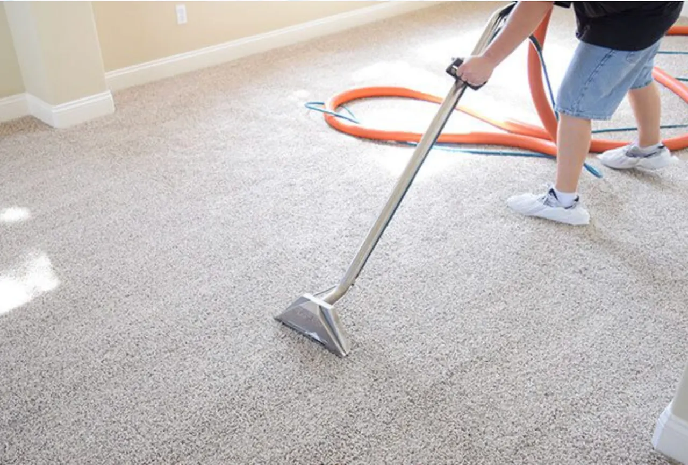
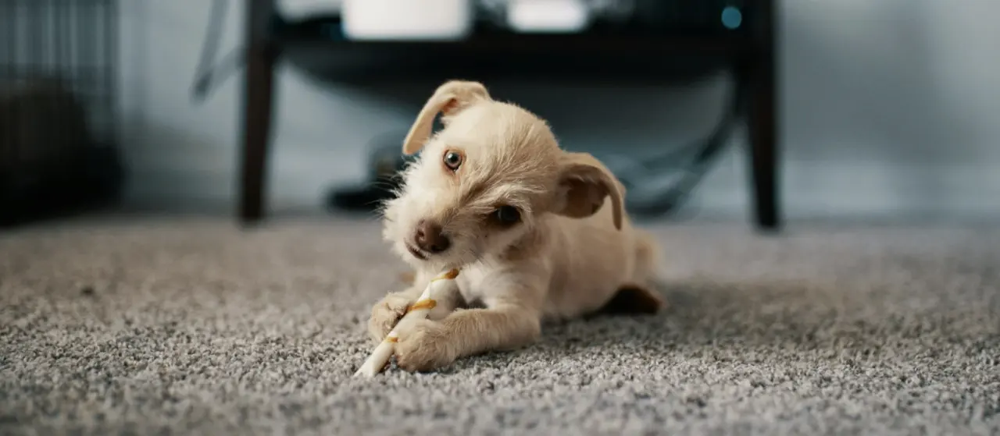
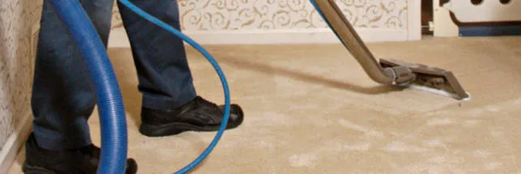

Carpet Cleaning in Harrisburg, PA
We deep steam clean wall-to-wall carpet, stairs and hallways across Harrisburg and Central PA, and treat spots, stains and pet odors. Most rooms take 20 to 30 minutes and carpets are dry within 6 to 12 hours.
Carpet Care Services
Soil wipes off a hard floor. In carpet it works down into the fibres, where it grinds away at them until the carpet needs replacing early.

Professional carpet cleaning includes
- Wall-to-wall carpets
- Deep steam cleaning
- Sanitizing and deodorizing
- Spot and stain removal
- Scotchgard® protection
- Stairs and hallways
- Shampoo cleaning
- Pre-conditioning for heavily soiled areas
The safest cleaning methods
We flush dirt and pollutants out of the fibres with self-neutralising, biodegradable solutions. Hypoallergenic and safe around children and pets on every job.
Pet odor and stain removal
Surface cleaning does not fix pet odour. We find the source and treat it with enzymes that neutralise it at fibre level.

Scotchgard® protection
An invisible barrier that resists dirt and stains and makes routine cleaning work better. Applied to carpet, rugs and upholstery.

Call now: (717) 454-7347Carpet Cleaning: Frequently Asked Questions
How often should I have my carpets professionally cleaned?
Most homes benefit from professional cleaning every 12 to 18 months. Homes with pets, children, or allergy sufferers should consider every 6 to 12 months. High-traffic areas like hallways and living rooms may need more frequent attention.
Is your carpet cleaning safe for pets and children?
Yes. We use non-toxic, hypoallergenic, biodegradable cleaning solutions that are completely safe for children and pets. No harsh chemicals or harmful residues are left behind.
How long does carpet cleaning take?
Most individual rooms take 20 to 30 minutes. A typical whole-home cleaning takes 2 to 4 hours depending on the size and condition of the carpets.
How long should I wait before walking on my carpet?
We recommend 2 to 4 hours before light foot traffic, and 6 to 12 hours for carpets to be fully dry. Opening windows or running a fan speeds drying significantly.
Can you remove pet odors from carpet?
Yes. We use enzyme-based treatments that neutralize pet odors at the source rather than masking them. We identify urine hotspots and treat them directly for lasting freshness.
Ready for cleaner carpets?
Free, no-obligation quotes across Harrisburg and Central Pennsylvania.